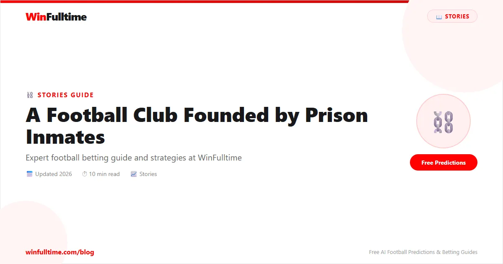

The year is 1966. England are about to win the World Cup at Wembley. Eusébio is tearing defences apart for Portugal. The beautiful game is about to reach a new audience through the first televised tournament. But 9,000 kilometres away, on a windswept island off the coast of Cape Town, something else is happening. A group of political prisoners — men convicted for their opposition to apartheid — are gathering on a dusty patch of ground to play football with a ball made of rags and twine. They have no boots. No goalposts. No referee whistle. And no permission. They are building the Makana Football Association, and they are about to prove that the game is more than just a game.
Robben Island is not a name that appears in any football history book. It appears in the history of oppression. For nearly 400 years, it served as a prison — first for Dutch colonial dissidents, then for lepers, and finally, from 1961 onward, for the political prisoners of the apartheid regime. Nelson Mandela spent eighteen of his twenty-seven years in prison on Robben Island. He was inmate number 46664. He was also, by his own account, one of the few prisoners who did not play football. Not because he did not want to. Because the authorities barred him."I was the only political prisoner who was not allowed to play soccer," he once said."I was kept in my cell to do my studies." But he watched. And he remembered.
The Makana Football Association was founded in 1966 by a group of anti-apartheid activists serving life sentences on Robben Island. The name"Makana" was chosen to honour a Xhosa warrior who died in the early 1800s while trying to escape the island by swimming to the mainland. It was a fitting name for a league built by men who refused to accept that their story had ended.
The league was organised with astonishing seriousness. The prisoners drew up a formal constitution. They established multiple divisions — A League, B League, and a junior league. They elected a league committee. They appointed referees, who studied the FIFA rulebook and sat formal examinations administered by the prison authorities. The referees wore white coats that the prisoners modified from their prison-issue clothing. There were league tables, promotion and relegation, player registrations, and transfer rules. There were even scouting reports and disciplinary hearings for violent conduct.
"We treated it as if we were running a professional league," recalled Mark Shinners, a former prisoner who served on the Makana FA committee. "Because in every way that mattered, we were. It was not a game to pass the time. It was a statement that we were still capable of organising ourselves, still capable of creating something meaningful, even in a place designed to break us."
Each team in the Makana FA was formed around a political affiliation or a shared background. There was Manchester United-inspired team, a team called the Bucks, another called the All Blacks, and a team formed exclusively by members of the Pan Africanist Congress. The prisoners dug goalposts into the limestone quarry floor using their bare hands. They marked the pitch lines with lime dust they stole from the prison worksite. The goals had no nets. The balls were made from rags and paper, tightly bound with twine, and they disintegrated after a few matches. When the prison authorities confiscated a ball, the prisoners would simply make another one.
The quality of football, by all accounts, was remarkably high. Several prisoners had played at semi-professional levels before their incarceration. The matches were fiercely competitive. But they were also a lifeline."When you stepped onto that pitch, you were no longer a prisoner," said Tokyo Sexwale, who would later become a cabinet minister in post-apartheid South Africa. "You were a football player. You were a man. You were free."
Among the players who took part in the Makana FA were men who would go on to shape South Africa's future. Jacob Zuma, who became the fourth president of democratic South Africa, played in the league. So did Tokyo Sexwale, who became Minister of Human Settlements. So did Jeff Radebe, who served as Minister of Justice. So did Steve Tshwete, who became Minister of Sport. The prison football league was not just a diversion. It was a training ground for leadership, for discipline, for the organisational skills that would later help run a country.
Founded: 1966, Robben Island, South Africa
Founders: Political prisoners of the apartheid regime
Divisions: A League, B League, Junior League
Balls: Made from rags, paper, and twine
Goalposts: Carved from limestone by hand
Referees: Trained and examined on FIFA rules
Notable players: Jacob Zuma, Tokyo Sexwale, Jeff Radebe, Steve Tshwete
FIFA recognition: 2007
Film:"More Than Just a Game" (2007)
Nelson Mandela was not allowed to play. The prison authorities considered him too high-risk, too politically significant to be seen running around a football pitch with other prisoners. He spent the Saturday afternoon match hours in his cell, studying law through correspondence courses from the University of London. But he followed the league closely. He knew the scores, the table positions, the form of each team. Fellow prisoners recalled that Mandela would sometimes request updates through whispered conversations during work shifts in the limestone quarry.
"He would ask who won, who scored, who played well," said Sedick Isaacs, a former prisoner who helped organise the league. "He was hungry for the news. Football was the only normal thing we had left. It connected us to the world outside."
When Mandela was released in 1990 and became president in 1994, he carried that connection with him. His embrace of the 1995 Rugby World Cup is famous — he wore a Springbok jersey, the symbol of the oppressor, and used it to unite a divided nation. But his love for football was deeper and older. It was forged in the dust of Robben Island, watching his comrades fight for a ball made of rags.
In 2007, FIFA formally recognised the Makana Football Association as the oldest football league in South Africa. The recognition came during the FIFA World Congress in Zurich, where a delegation of former Robben Island prisoners accepted a commemorative plaque on behalf of the league's founders. Sepp Blatter, then FIFA president, called it "one of the most remarkable football stories ever told."
The honour was not just symbolic. It placed the Makana FA in the official FIFA archive alongside the oldest leagues in the world — the English Football League, the Scottish Football League, the Argentine Primera División. A league that had been played with rag balls on a limestone quarry floor, between men serving life sentences for fighting apartheid, was now part of football's official history. It is impossible to overstate what that meant to the men who had played in it."When FIFA recognised our league, I cried," said Mark Shinners. "I am not ashamed to admit it. Forty years after we kicked our first rag ball on that island, the world finally knew what we had done."
The story of the Makana FA was turned into a documentary film in 2008 titled"More Than Just a Game," directed by Junaid Ahmed. The film features interviews with the surviving members of the league, archival footage of Robben Island, and animated sequences that reconstruct the matches. It won several international awards and was screened at football festivals around the world. The title is perfect, because the Makana FA was never really about football. It was about dignity. About organisation. About the refusal to be broken. The prison authorities allowed the league to continue for years because they realised it kept the prisoners calm and disciplined. What they did not realise was that it was also teaching the prisoners how to run a country. The same skills — committee meetings, dispute resolution, fixture scheduling, resource allocation — are the basic mechanics of governance. The men who ran the Makana FA were running a miniature state. When they left prison, they were ready to run a real one.
The Makana FA disbanded in the late 1980s as the apartheid regime began to collapse and prisoners were released or transferred. But its legacy is woven into the fabric of South African football and, indeed, into the fabric of the nation itself. The 2010 FIFA World Cup in South Africa was the ultimate vindication of the Makana FA spirit. When South Africa opened the tournament against Mexico at Soccer City in Johannesburg, the entire world watched a nation that had been barred from international sport for decades host the greatest show on Earth. The prisoners who had played with rag balls on Robben Island saw their dream fulfilled.
Today, South African football is thriving. The Premier Soccer League is one of the best-funded and most competitive leagues on the African continent. Players like Percy Tau, Lyle Foster, and Themba Zwane represent South Africa at the highest levels of the European game. Kaizer Chiefs, Orlando Pirates, and Mamelodi Sundowns have global fan bases. But every time a South African player steps onto a pitch, he is standing on the shoulders of the men who played in the Makana FA. They built the first organised football in the country with nothing but rags, determination, and the belief that the beautiful game could survive even in the ugliest of places.
Nelson Mandela never played a match in the Makana FA. But he understood its importance better than anyone."I was not allowed to play," he said in 2000, looking back on his Robben Island years. "But I watched. And I knew that as long as my comrades could run, could kick, could celebrate a goal — the apartheid regime had not yet won. Because you cannot break the spirit of a man who still plays football."
The spirit of the Makana FA lives on every time the ball is kicked. Get free daily football predictions and bet on today's matches with confidence.
Generate optimized accumulator combinations from today's data-driven predictions. Set your target odds and get instant ticket suggestions.
Pro Ticket Builder →